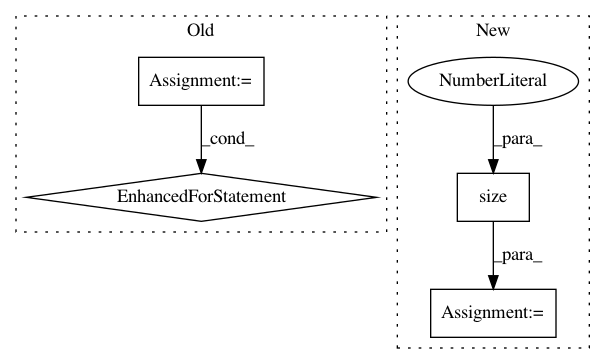

87d57a3d34a1eef2c6ad5519741710e3321f136c,DialogueRNN/model.py,BiE2EModel,forward,#BiE2EModel#Any#Any#Any#,304
Before Change
if att2:
att_emotions = []
alpha = []
for t in emotions:
att_em, alpha_ = self.matchatt(emotions,t,mask=umask)
att_emotions.append(att_em.unsqueeze(0))
alpha.append(alpha_[:,0,:])
att_emotions = torch.cat(att_emotions,dim=0)
hidden = F.relu(self.linear(att_emotions))
else:
hidden = F.relu(self.linear(emotions))
After Change
qmask = qmask.unsqueeze(1).expand(-1, T1.size(1), -1)
umask = torch.FloatTensor([1,1,1]).type(T1.type())
umask = umask.expand(-1, T1.size(1))
emotions_f, alpha_f = self.dialog_rnn_f(U, qmask) // seq_len, batch, D_e
emotions_f = self.dropout_rec(emotions_f)
rev_U = self._reverse_seq(U, umask)
emotions_b, alpha_b = self.dialog_rnn_r(rev_U, qmask)
emotions_b = self._reverse_seq(emotions_b, umask)
emotions_b = self.dropout_rec(emotions_b)
emotions = torch.cat([emotions_f,emotions_b],dim=-1)
//print(emotions)
emotions = self.dropout_rec(emotions)
//emotions = emotions.unsqueeze(1)
if att2:
att_emotion, _ = self.matchatt(emotions,emotions[-1])
hidden = F.relu(self.linear1(att_emotion))
else:
hidden = F.relu(self.linear1(emotions[-1]))
//hidden = F.relu(self.linear2(hidden))
In pattern: SUPERPATTERN
Frequency: 5
Non-data size: 4
Instances
Project Name: SenticNet/conv-emotion
Commit Name: 87d57a3d34a1eef2c6ad5519741710e3321f136c
Time: 2019-03-19
Author: 40890991+soujanyaporia@users.noreply.github.com
File Name: DialogueRNN/model.py
Class Name: BiE2EModel
Method Name: forward
Project Name: osmr/imgclsmob
Commit Name: 2e7f747cdc99a5bc7e365b1b76edb4fdc26be4f1
Time: 2019-02-26
Author: osemery@gmail.com
File Name: pytorch/pytorchcv/models/others/oth_fractalnet_cifar10_2.py
Class Name: FractalNet
Method Name: forward
Project Name: maciejkula/spotlight
Commit Name: bc51dbc0c56f68ed30857755026633f78eef1ae8
Time: 2017-08-20
Author: maciej.kula@gmail.com
File Name: spotlight/layers.py
Class Name: BloomEmbedding
Method Name: forward
Project Name: cornellius-gp/gpytorch
Commit Name: c63cc933782e2de32c9fe74c18b337b2bbe0f242
Time: 2018-07-19
Author: jrg365@cornell.edu
File Name: test/examples/test_kissgp_variational_regression.py
Class Name: TestKissGPVariationalRegression
Method Name: test_kissgp_gp_mean_abs_error
Project Name: ecs-vlc/torchbearer
Commit Name: 4d0e2b25a3064079923e48729a0568bbae636d88
Time: 2019-06-26
Author: ethanwharris@gmail.com
File Name: torchbearer/callbacks/imaging/imaging.py
Class Name: ImagingCallback
Method Name: process